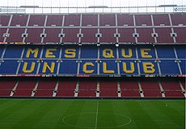
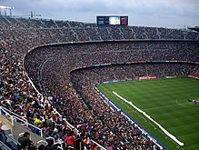
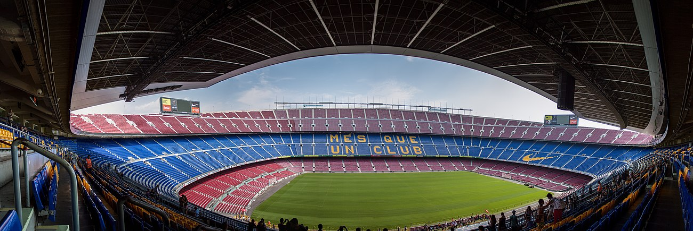

Камп Ноу
«Камп Но́у»[2] (кат. Camp Nou, МФА [ˈkam ˈnɔw][3], в переводе «Новое поле») — стадион футбольного клуба «Барселона». С момента своего открытия в 1957 году стадион принадлежал испанскому футбольному клубу и вначале был назван Estadi del FC Barcelona (Стадион ФК «Барселона»), тем не менее уже тогда его называли «Камп Ноу». Официально своё нынешнее название он получил в 2000 году[4] после игры против футбольного клуба «Реал Мадрид».
Вместимость «Камп Ноу» составляет 99 354 зрителя[1]; это самый большой по вместимости стадион не только в Испании, но и во всей Европе. Стадион является 12-м по вместимости зрителей стадионом мира и вторым в списке стадионов, предназначенных только для футбола, уступая по этому показателю только мексиканскому стадиону «Ацтека».
«Камп Ноу» принимал матчи чемпионата Европы и мира, а также матчи олимпийского футбольного турнира 1992 года, включая финал. Неоднократно на поле проводились и финалы крупнейших еврокубковых турниров. Кроме этого, стадион часто используется как концертная площадка: здесь выступали с концертами Фрэнк Синатра, Майкл Джексон, U2 и др.
История
Стадион был построен, когда президентское кресло «Барселоны» занимал Франсеск Миро-Санс. Он продвинул проект будущего «Камп Ноу» из-за малой вместимости старого стадиона Camp de Les Corts, а также из-за того, что главный конкурент — «Реал Мадрид» построил Estadio Chamartín (ныне известный как «Сантьяго Бернабеу»). Проект нового стадиона «Барселоны» был поручен архитектору Франсеску Митжансу (двоюродному брату Миро-Санса).
Первый камень был заложен в марте 1953 года, а первоначальный бюджет составил 67 миллионов песет. Однако во время работы из-за непредвиденных изменений в почве возникли трудности, что увеличило срок постройки и затраты на стадион, которые достигли 288 миллионов. Клуб рассчитывал покрыть расходы на строительство за счёт продажи участка стадиона Les Corts, но муниципалитет Барселоны на десять лет задержался с переводом земли в другую категорию, что привело к временному дефициту средств. Франсиско Франко простил клубу долг.
Открытие стадиона состоялось 24 сентября 1957 года. С тех пор «Барселона» рассталась со своим бывшим стадионом и стала играть на «Камп Ноу», что дало тысячам болельщиков, которым не хватало места на Les Corts, возможность посещать матчи любимой команды. К моменту открытия «Камп Ноу» был одним из самых больших и величественных стадионов в мире: его вместимость составляла 90 000 мест.
Вначале предусматривалось, что стадион будет носить имя основателя клуба Ганса Гампера, но позже было решено взять более нейтральное: Estadio del Club de Fútbol Barcelona (стадион ФК Барселона)[5]. Тем не менее, в народе стадион был известен под названием «Камп Ноу» (что на каталанском языке означает «новый стадион» или «новая земля»), ведь по отношению к Les Corts он был новым. Через восемь лет после открытия стадиона президент Энрик Лаудет собрал совещание, на котором обсуждалось принятие официального названия стадиона. Среди возможных вариантов были Estadi Barça и Estadi Camp Nou, но большинство голосов было отдано Estadio del CF Barcelona. Несмотря на это, большинство болельщиков и журналистов всё равно отдавали предпочтение «Камп Ноу», и по этой причине в 2001 году президент Хуан Гаспар созвал новое собрание, на котором большинство проголосовало за присвоение стадиону этого имени[6].
Во время сезона 2007—2008 в честь 50-летнего юбилея стадиона для футболистов «Барселоны» была изготовлена специальная форма.
Открытие
«Камп Ноу» был открыт 24 сентября 1957 года. В честь этого события были организованы памятные мероприятия, одним из которых стала дружеская встреча «Барселоны» и польской «Легии». Матч закончился со счётом 4:2 в пользу каталонцев, а игрок «Барселоны» Эулохио Мартинес забил первый гол в истории нового стадиона.
Первая официальная встреча на стадионе состоялась 6 октября 1957 года. В этом матче,
который был
вторым
в
сезоне 1957—1958, «Барселона» встретилась с «Реалом» из Хаэна. К радости болельщиков команда выиграла со
счётом 6:1, а авторами забитых мячей были Вилаверде, Тэхада, Кубала и Эулохио Мартинес.
Перестройка стадиона
«Камп Ноу» перестраивался несколько раз.
Впервые это произошло в 1981 году: стадион был расширен для проведения на нём матчей чемпионата мира по футболу 1982 года, проходившего в Испании. Вместимость «Камп Ноу» была увеличена до 120 000 зрителей. Вторая перестройка была осуществлена в 1998 году в связи с введением УЕФА новых правил, предписывающих то, что все места должны быть снабжены сиденьями. Для того, чтобы стадион потерял как можно меньше мест пришлось опустить уровень газона. Теперь вместимость стадиона снизилась до 98 934. Размеры футбольного поля составляют 105x68 метров.
«Камп Ноу» — один из немногих европейских стадионов, которые УЕФА оценивает в пять звёзд.
На территории стадиона находится официальный центр служащих ФК «Барселона», офис руководства и музей футбольного клуба, который является самым часто посещаемым музеем в Каталонии. Кроме того, «Камп Ноу» — это главная часть комплекса, в который также входит «Мини-эстади» (исп. Mini estadi) — двадцатитысячный стадион, на котором тренируются ученики спортивной школы клуба, «Ла Масия» (исп. La Masía) — здание, где живут самые юные воспитанники клуба, и «Палау Блауграна» (исп. Palau Blaugrana) — корпус на 8 000 зрителей, где тренируются баскетбольные, гандбольные, хоккейные и мини-футбольные команды клуба.
Перестройка в честь пятидесятилетия
В сентябре 2007 года клуб принял проект по перестройке стадиона в честь пятидесятилетия со дня его открытия. Был организован международный конкурс, во время которого в 80 кабинетах архитекторы со всего мира представляли свои проекты. В состав жюри вошли представители клуба, члены государственной администрации и ассоциации каталонских архитекторов. 18 сентября 2007 года стал известен победитель — им стала английская фирма «Фостерс и партнёры» (англ. Foster and Partners), которая была известна по постройке нового стадиона «Уэмбли», виадука Мийо, башни Кольсерола, нового торгового центра в Нью-Йорке[7]. Первоначальный бюджет составил 250 миллионов евро[7]. Модель проекта впервые была представлена публике перед началом матча между «Барселоной» и «Севильей», который проходил 22 сентября 2007 года.
В 2008 году было решено закончить проект, чтобы начать строительство в 2009 году и закончить его в 2011 или 2012 году. По состоянию на июнь 2021 года, реконструкция так и не была начата.
Усовершенствования стадиона
- Вместимость стадиона должна повыситься с 99 354 до 106 000 зрителей.
- В вип-зоне будет на 14 000 больше мест.
- Будет установлена выдвигающаяся крыша, защищающая все трибуны.
- Будет удвоено пространство для СМИ.
- На фасад будут установлены подвижные плиты из поликарбонатов и стекла, которые позволят создавать
- световые эффекты более сложные, чем на «Аллианц арене» или барселонской башне Акбар.
- Будут построены эскалаторы и лифты для обычных болельщиков.
- Больше приспособлений для инвалидов.
Музей стадиона
На стадионе функционирует музей, где можно ознакомиться с многочисленными наградами, завоёванными клубами «Барселона» (как футбольным, так и баскетбольным), с документами, видеофильмами, фотографиями и другими материалами, а также спуститься в раздевалку стадиона и посетить комментаторские кабины. Музей очень популярен среди туристов, посещающих Барселону.
